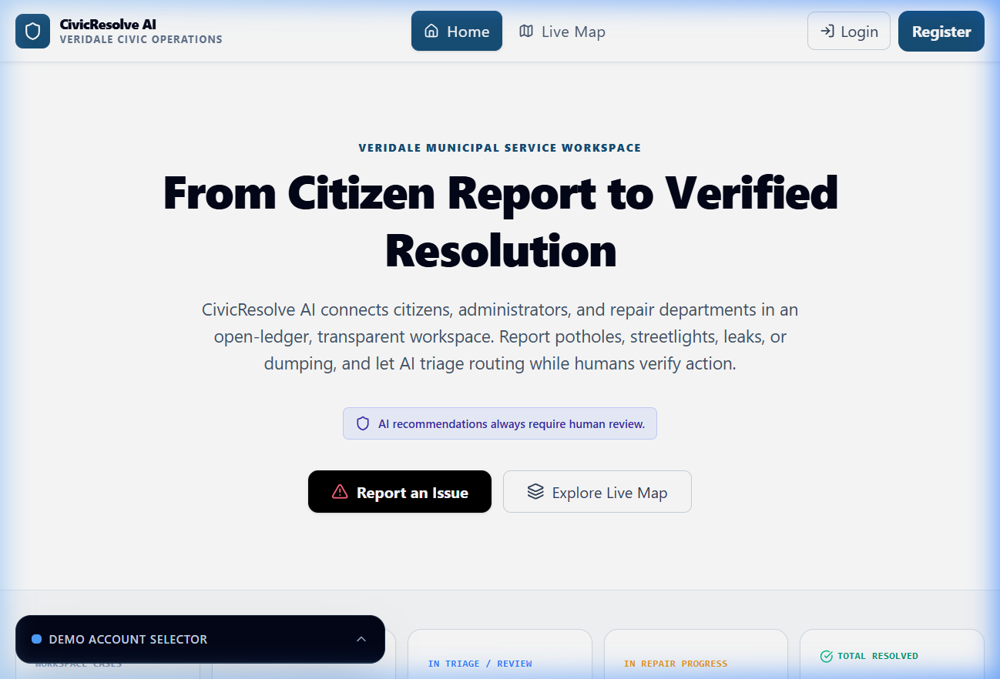
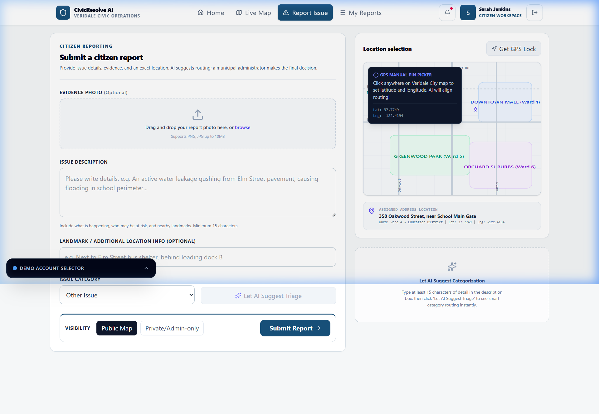
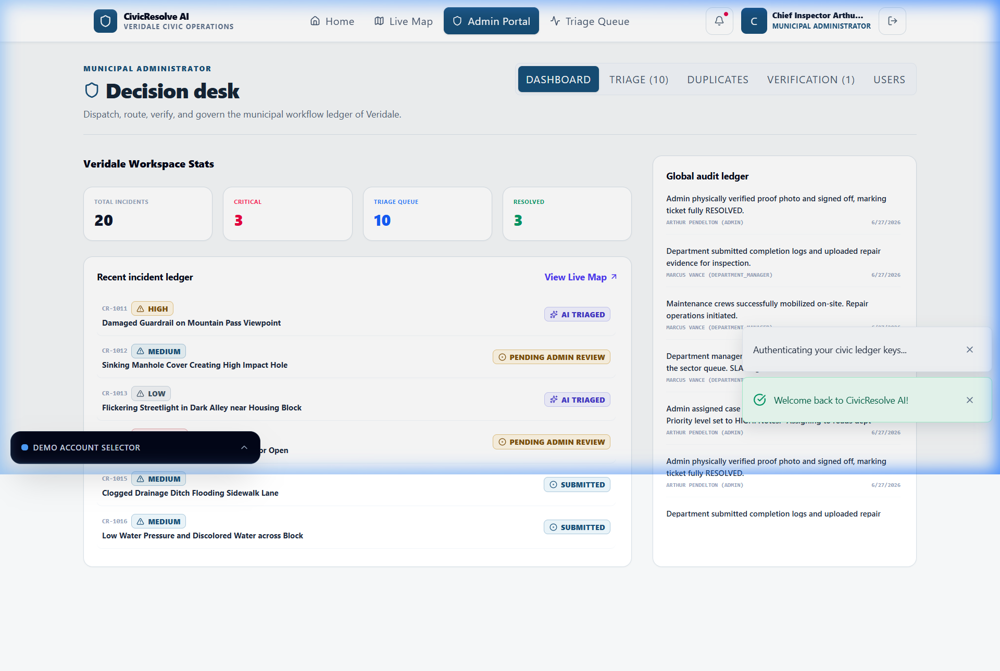
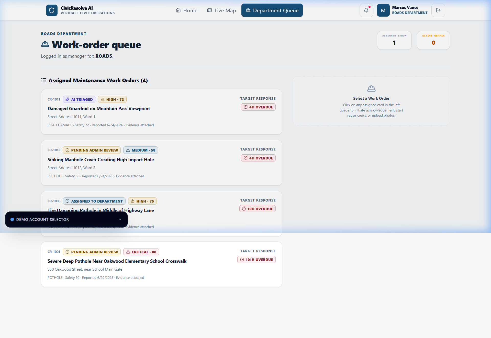

From Citizen Report to Verified Resolution — A smart, AI-powered platform that transforms how cities handle municipal complaints.
One platform that connects Citizens → AI → Admin → Departments → back to Citizens.
Gemini AI reads the complaint and instantly identifies category, severity & the correct department.
Formula-based ranking (0–100) so critical hazards like electrical risks always come first.
Reports within 150 meters of each other for the same category get auto-clustered together.
Departments must upload repair proof. Admin compares Before vs After photos side-by-side.
If the fix is bad, citizens can reopen the case with a justification and it goes back to admin.
Every action is permanently logged as an immutable event. Nothing gets deleted or tampered.
Reports issues with photos & GPS. Tracks status. Upvotes others' reports. Can reopen bad fixes.
Full dashboard. Reviews AI triage. Dispatches to departments. Verifies repairs. Closes cases.
Sees only own dept queue. Accepts tickets. Does repairs. Uploads mandatory photo evidence.




| Layer | Technology |
|---|---|
| 🖥️ Frontend | React 19, Vite, Tailwind CSS 4 |
| ⚙️ Backend | Node.js, Express.js |
| 🤖 AI Engine | Google Gemini 2.5 Flash |
| 💾 Database | JSON Mock (Firebase-compatible) |
| 🔐 Auth | Demo Auth (Firebase-ready) |
| 📦 Language | TypeScript end-to-end |
| 🎨 Icons | Lucide React |
| ✨ Animations | Motion library |
npm install
npm run dev
Boots at localhost:3000
CivicResolve AI brings transparency, accountability, and AI-powered efficiency to municipal complaint resolution.
Gemini 2.5 Flash
Full Audit Trail
Citizen, Admin, Dept
Before vs After
VIBE2SHIP Hackathon 2026